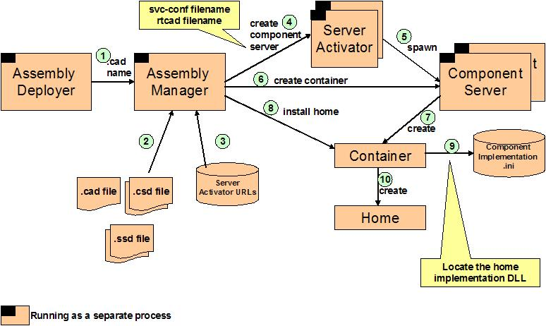
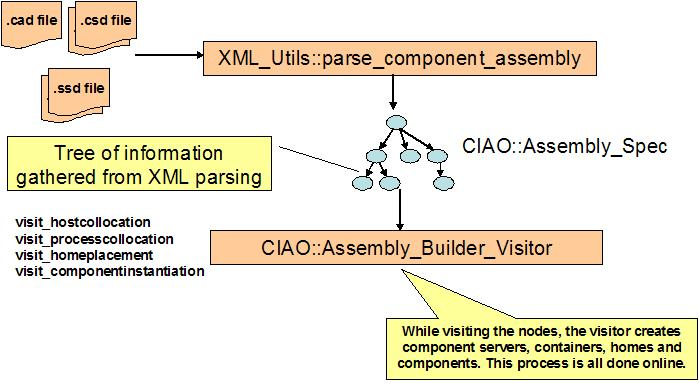
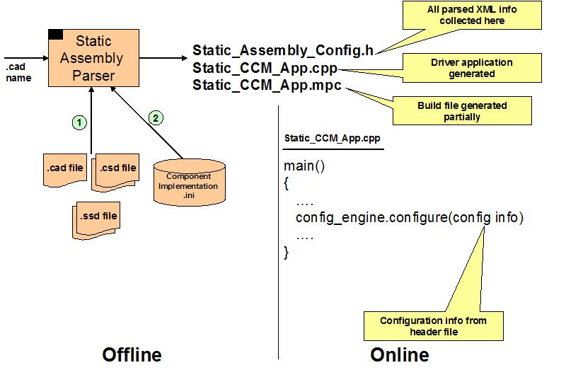
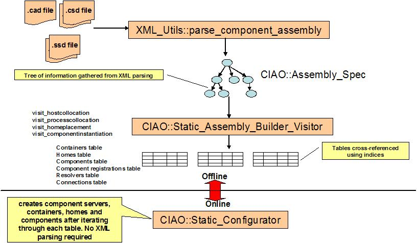
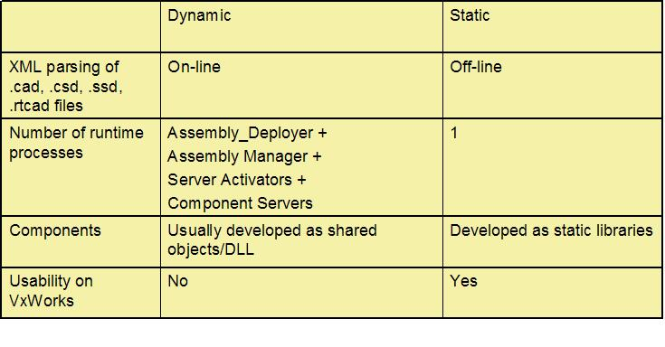

Therefore, we have incorporated support for component configuration in CIAO on platforms like VxWorks, as a set of optional strategies and optimizations to the existing CIAO configuration capabilities. By supporting both dynamic and static styles of configuration in CIAO, we will both (1) be able to realize our short term goals in making CIAO available on VxWorks for use in the Boeing PCES/MoBIES OEP, and (2) set a precedent for availability of static configuration capabilities more generally, so that DRE systems are well-supported within the new Deployment and Configuration specification implementation for CIAO as well.
The fundamental intuition in understanding our approach is that in DRE systems the stages of the overall system lifecycle are similar to those in more dynamic conventional component-oriented client-server applications. However, in DRE systems several phases of the system lifecycle are compressed into the compile-time and system-initialization phases, so that (1) for testing and verification purposes the set of components in an application can be identified and analyzed before run-time, and (2) overheads for run-time operation following initialization are reduced and made more predictable. Furthermore, due to the nuances of the platforms traditionally used for deploying DRE systems, not all features of conventional platforms are available. Our approach therefore avoids certain mechanisms that are either unavailable or too costly in terms of performance.
We follow these intuitions in our approach, taking the existing
configuration
phases in CIAO and pushing several of them earlier in the configuration
lifecycle. We ensure that our approach can be realized in the
context
of the platforms on which the Boeing PCES/MoBIES OEP will be deployed,
notably VxWorks, by re-factoring the configuration mechanisms and
retargeting
them to use only the services available on the target real-time
platforms.

Figure 1. Current configuration process in CIAO
The first stage of the CIAO system lifecycle occurs off-line, when component package (.csd) and assembly (.cad) files are generated by a modeling tool or other prior stage of the tool chain. These files contain an abstract specification of the configuration that is to be achieved by CIAO in each particular deployment environment .
CIAO interprets these .csd and .cad files, and creates and configures the components, their run-time server environments, and QoS properties within the supporting ORB and other related infrastructure. Currently, CIAO runs several daemon processes for each deployment environment: one or more Component Installation / Server Activation (CISA) daemons on each machine where components can be deployed, an additional Assembly Manager daemon and an Assembly Deployer process used by the system developer.
The Assembly Manager stores an internal table with the target platform availability information . The Assembly Deployer tells the Assembly Manager which assemblies of components (each assembly is defined in a separate .cad file) should be deployed on which target machines. The Assembly Manager parses the XML structures in the .cad file, and generates its own internal data structure (Figure 2) as an intermediate representation of that assembly.
The Assembly Manager then traverses (Figure 2) this intermediate representation, instructing each CISA daemon to install and configure specific component servers and containers, to create specific homes, and to instantiate specific component instances. Each CISA daemon has additional information about the component implementations available on that endsystem – each component UUID is mapped to a disk path for the .dll or .so file within which a factory method for its home factory is defined.

Figure 2. Intermediate representation of configuration information
The following steps are optional, and will only be performed if they are explicitly specified in the assembly definition itself. For the sake of discussion, we consider the case where all the steps are in fact specified. The Assembly Manager will tell the CISA daemon the UUIDs of the components to be installed in that component server, and the CISA daemon will look up and load the appropriate dynamic library, invoke the home factory method to create the home, and then invoke the home’s component creation method. After all the component instances and homes have been created and references to them have been obtained, the assembly manager will then make all the connections between ports and receptacles, facets, and event sources and sinks by invoking connect and subscribe methods on the receiving end component.
QoS-specific metadata like priorities can be configured by a .cad file extension called a real-time descriptor (.rtcad) file. The Assembly Manager will read the .rtcad file and will parse and associate real-time policies with the appropriate component instances. One implication of this mechanism is that the Assembly Manager will maintain QoS meta-data within its intermediate representation, alongside the conventional CCM meta-data.
Furthermore, when the Assembly Manager interacts with the CISA daemon(s) on each endsystem, commands to configure particular component and component server run-time infrastructure QoS properties are passed from the Assembly Manager to the CISA daemon. The ORB (and as a future extension the ORB Services) of the endsystem on which the components are installed is currently configured via the ACE Service Configurator. The CISA daemon maps different service configurations (as defined in particular svc.conf files) to logical names used in the component assembly descriptors.
The logical configuration names are encoded within the .cad file as an extension of the conventional .cad file format using the “extension” element of the existing .cad file XML DTD. The Assembly Manager passes a component server creation command, containing a logical configuration name, which the CISA daemon maps to a particular svc.conf file when it creates a new component server. The CISA daemon adds a command line flag to the execution command line used to spawn the new component server, which causes that configuration file to be parsed and applied during startup of the component server itself.

Figure 3. Static Configuration in CIAO
First, one of the generated files is a C++ header file, so that it can be included directly by C++ source files. There is no additional parsing required to import a number of static constants and identifiers it declares and defines, so that those constants end up being compiled directly into C++ code. Second, where enumeration of information is needed, the header file contains simple homogeneous C++ arrays so that C++ source code can iterate over those arrays with minimal overhead. Third, it declares information so that later information depends on earlier information (Figure 4), and the components are directly configured within that header file.

Figure 4. All XML files are parsed offline and stored as cross-referenced tables in Static_Assembly_Config.h
The major issues that we addressed in developing a re-factored version of the CIAO configuration mechanisms are as follows:
1. XML parsing is too expensive to be performed during system initialization, so that all such parsing has been moved off-line to before compile-time, and the resulting information is linked statically into the application itself.
2. Each endsystem boots and initializes in a single process address space, so that any remaining inter-process communication between daemons is replaced by direct interactions between objects, or at most between threads.
3. Dynamic link libraries are unavailable on VxWorks, so an alternative mechanism for obtaining the home factory method entry point is needed. We gather this information from the XML files and statically generate a map containing the entry point function names and the entry point function pointers. This information will be used by the CIAO container implementation instead of trying to load a dll and then finding the entry point in the dll.

Figure 5. CIAO Dynamic vs Static Configuration
To run the static configurator,
Static_Assembly_Parser -a <.cad file>
This will generate three files -
Static_CCM_App.cpp - this file contains the main program which instantiates the component server and invokes the static configuration engine to create containers, homes, etc.
Static_CCM_App.mpc - this file contains the necessary files for building the static application. You have to manually change this file so as to include files that are not known to the static configurator.
Static_Assembly_Config.h - this file contains the C++ intermediate representation of all the information in the .cad, .csd and .ssd XML files.
Example - An example run is shown using the BasicSP scenario.
The current implementation does not have support for multiple
component
servers running on multiple processors. Multiprocessor scenario
involves
coordination and synchronization among the component servers running on
different processors. There has to be some kind of a mediator which
determines
that all components are instantiated before connections can be made
among
them.